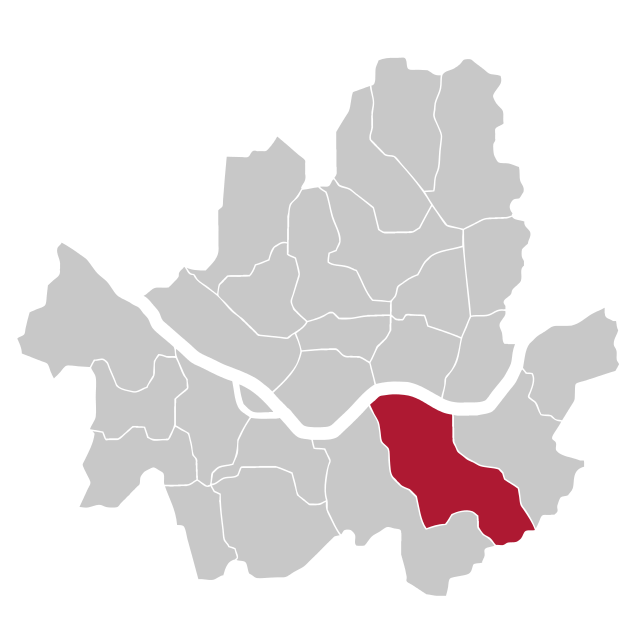
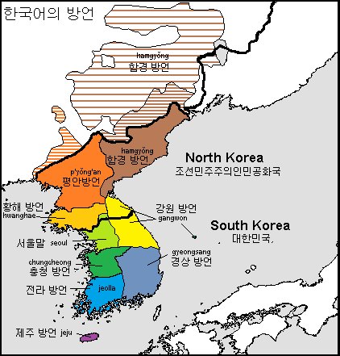

Psy - Gangnam Style
“Gangnam” is a wealthy area of Seoul, known for a very high standard of living

“Gangnam” is a wealthy area of Seoul, known for a very high standard of living
… and “Oppa” is the “Older Brother” honorific kinship term used by a younger woman to an older man
Will’s office hours are cancelled tomorrow and next week. Sorry!
Material from guest lectures is totally test-eligible
Remember, the slides are online
Korean
Japanese
“Altaic”

Some say it’s an isolate, others say it’s “Altaic”
Spoken by around 80 million people
Agglutinative, SOV
Vowel length and Vowel Harmony
Hangul Writing System
“Faucalized” or “Tense” consonants
Honorifics
Each concept or word has a symbol, with no correspondence to sound
Each concept or word has a symbol, with no correspondence to sound
Created by Sejong the Great in 1443
Replaced the Hanja ideographic writing system
This is a really slick writing system
It’s a deeply phonetic alphabet

English
All human beings are born free and equal in dignity and rights. They are endowed with reason and conscience and should act towards one another in a spirit of brotherhood.
Korean
모든 인간은 태어날 때부터 자유로우며 그 존엄과 권리에 있어 동등하다. 인간은 천부적으로 이성과 양심을 부여받았으며 서로 형제애의 정신으로 행동하여야 한다.
Japanese has small, curvy strokes with interspersed complex characters
Chinese has mostly square-ish, complex characters.
Korean has lots of circles and horizontal/vertical lines.
すべての人間は、生まれながらにして自由であり、かつ、尊厳と権利と について平等である。人間は、理性と良心とを授けられており、互いに同 胞の精神をもって行動しなければならない。
is…
Chinese
Korean
Japanese
모든 인간은 태어날 때부터 자유로우며 그 존엄과 권리에 있어 동등하다. 인간은 천부적으로 이성과 양심을 부여받았으며 서로 형제애의 정신으로 행동하여야 한다.
is…
Chinese
Korean
Japanese
人 人 生 而 自 由, 在 尊 严 和 权 利 上 一 律 平 等。 他 们 赋 有 理 性 和 良 心, 并 应 以 兄 弟 关 系 的 精 神 相 对 待。
is…
Chinese
Korean
Japanese
When Korean speakers do… something… during consonants
These are sometimes called “Double consonants”
We linguists have little idea what’s going on here
In Korean, verbs and adjectives take different morphemes marking relative social status
Different affixes and pronouns create different “speech levels”
-ㅂ니다 - Honorific, Most Polite, Most Formal
-(아/어/여)요 - Polite, natural, a bit formal
-아/어/여 - Casual, Informal or Intimate
Usually used for younger people or close friends
The most common is called the “T/V Distinction”, where there’s a simple “formal” and “informal” form
Thou lovest Enchiladas
You love Enchiladas
Thou is informal!
Maybe be a top-level language, may be Altaic
Main branch: Japanese (and its dialects) - Spoken by 125 Million People
Other branch: Ryūkyūan languages

SOV word order, agglutinative
CVCVCV Syllable Structure
The Japanese “R”
Extensive use of particles
Extensive Honorific System

‘Merry Christmas’ - merii kurisumasu
Japanese and Korean speakers often struggle with the English “L” and “R”
The English R (/ɹ/) is an Alveolar Approximant
The English L (/l/) is an Alveolar Lateral Approximant
The Japanese “R” is a postalveolar flap which is not defined for laterality.
The Korean “R” is very similar
When speaking Japanese and Korean, “lateral” is not a meaningful difference.
When Japanese and Korean speakers speak English, this makes life difficult!
Japanese and Korean speakers can master our very weird /ɹ/, but it takes time.
dokoro ka - “Anything but” or “Far from”
Kare wa keisatsukan dokoro ka, hanzaisha da.
he be policeman dokoro ka, criminal be.
“Far from a policeman, he’s a criminal!”
ka na - “I wonder” (but I strongly suspect)
Kare wa ayashii hito ka na.
He be suspicious person ka na.
“I’m starting to wonder if he’s a suspicious person.
nanka - Shows disgust
Jogen nanka iranai.
Advice nanka I.need.not
“I don’t need any (damn) advice!”
Word beautification (Adding prefixes to words to make them more “beautiful”)
Politeness registers
Honorific Verb forms
Honorific Titles
Many different ways to say “I ask you for a favor”
Between friends - yoroshiku tanomu.
Polite - yoroshiku tanomimasu
Business Formal - yoroshiku onegai shimasu
Humble Formal - yoroshiku onegai itashimasu.
Super-Polite formal - yoroshiku onegai mōshiagemasu.
Different verbs are used depending on how polite you’re being
Dictionary: Tabe-ru. 食べる
Neutrally polite: Tabe-masu. 食べます
Kinda polite: Tabe-rare-masu. 食べられます
Super polite: Meshi’agari-masu. 召し上がります
Humble: Itadaki-masu. 頂きます
San (Title of respect between people of any age)
Sama (People much higher in rank than yourself)
Kun (People of lower rank, or close friends)
Chan (Diminutive)
Sensei (Teachers, doctors, politicians)
Shi (People you’ve never met but respect)
… but we never have time nanka.
“Wow, there sure are a lot of similarities between Japanese and Korean”
A proposed top-level family like Indo-European
Attempts to unite Turkic, Mongolic, Tungusic, Koreanic, Japonic, and Ainu
Still rather controversial
Two proposed groupings: “Macro-Altaic” and “Micro-Altaic”
Macro-Altaic: Turkic, Mongolic, Tungusic, Koreanic, Japonic, Ainu

(Blue, Green, Red, Yellow, Purple and Maroon, respectively)
Micro-Altaic: Turkic, Mongolic, Tungusic
(Blue, Green, and Red respectively)
There’s more evidence for Micro-Altaic than for Macro-
Most Altaic supporters now believe in Macro-Altaic
Many people still believe in neither!

Pro-Altaic - “These similarities come from genetics”
Anti-Altaic - “These similarities come from contact and borrowings”
… but even if it isn’t, it’s useful to know that the “Altaic” languages share some similarities
Korean is awesome.
Japanese is awesome
Altaic may be a top-level language family
Restoring Honor(ifics) to English